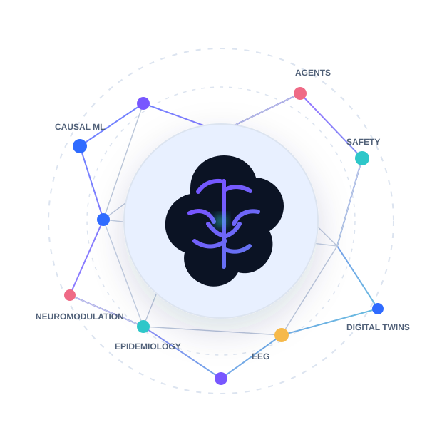
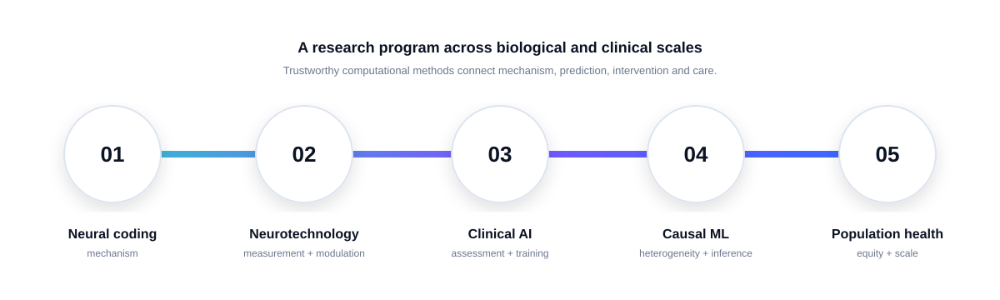
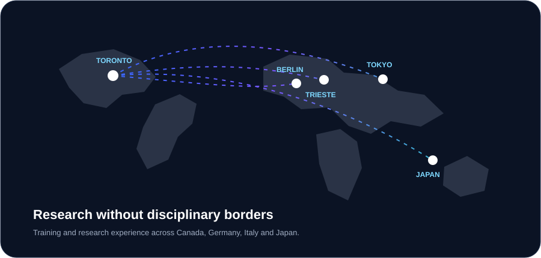

Agentic & Generative AI
Multi-agent systems for structured psychiatric interviewing, psychotherapy training, simulated consultations, and clinical decision support with human oversight.
Explore →We develop clinically grounded computational methods—from agentic AI and causal machine learning to neural biomarkers and precision neuromodulation—to make mental health care more personalized, interpretable, equitable, and scalable.

How can computational intelligence become genuinely useful in mental health? We work across biological, clinical, and population scales rather than treating them as separate problems.

Multi-agent systems for structured psychiatric interviewing, psychotherapy training, simulated consultations, and clinical decision support with human oversight.
Explore →Empirical evaluation of guardrails, sycophancy, personas, toxicity detection, digital twins, simulation fidelity, and identity-specific validity.
Explore →Epidemiologic reasoning, interpretable machine learning, and causal methods for heterogeneity, treatment-seeking, suicidality, depression, and access to care.
Explore →Neural signal processing, biomarker discovery, EEG automation, brain-state-dependent stimulation, deep brain stimulation and precision neuromodulation.
Explore →Biophysical and computational models of excitability, spike initiation, multiplexed sensory coding, physiological noise, and degeneracy in neural systems.
Explore →Our distinctive aim is not a single model or modality, but the bridge from mechanism to trustworthy tools that can survive real clinical constraints.
See the evidence →Open and translational projects make the work inspectable, reusable, and easier to test in realistic settings.
Human-supervised multi-agent architecture for structured psychiatric interviewing, screening, decision support, and auditability.
View on GitHub →Simulated patient encounters, rubric-based fidelity assessment, and targeted feedback for motivational interviewing and CBT training.
View on GitHub →A modular Python framework for causal impact analysis in time-series data with support for TensorFlow Probability, Pyro, and Prophet.
Open on PyPI →Mentorship has spanned research staff, visiting PhD researchers, MSc students, and undergraduate trainees—many now working across academic research and technology.
Trainees are encouraged to own a meaningful question, understand the assumptions behind the methods, write clearly, and build artifacts others can inspect. Projects can sit anywhere from clinical AI evaluation to causal inference or neural signal analysis.
Former trainees listed in the CV have moved into research and technical roles at organizations including University of Toronto, Sanofi, GSK, Staples, Accenture, Huawei, Chubb, and others.
See trainees & alumni →
The program combines academic training in biomedical engineering and computational neuroscience with clinical mental health research and industry-scale AI leadership. International research experiences include SISSA in Italy, Charité University Berlin, and RIKEN in Japan.
We are interested in rigorous collaborations, clinically grounded AI evaluation, reproducible computational work, and training projects that connect methodological depth with real-world relevance.